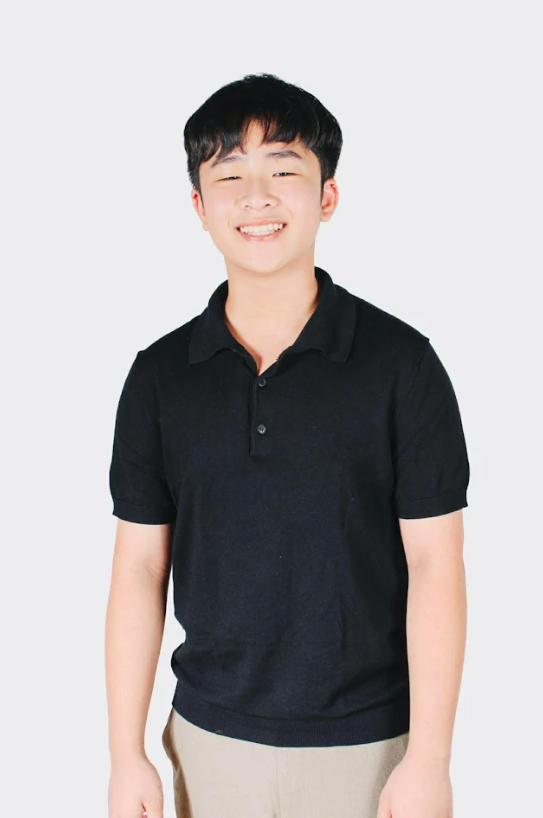

A Comparative Study on the Effect of Moringa (Moringa oleifera), Tamarind (Tamarindus indica), and Jackfruit (Artocarpus heterophyllus) Seed Extracts on Water Turbidity (NTU), Dissolved Oxygen (mg/L), pH, and Treatment Time (hours) in Solar Water Disinfection (SODIS) Using Poso Water (Manual Water Pump)
- Ranara, Ramil Xian, Pilares, Caleb, (Palad, Tyler, Alcudia, Vigo)
Introduction
Research topic: This study evaluates the effectiveness of Moringa oleifera, Tamarindus indica, and Artocarpus heterophyllus seed extracts as natural coagulants to enhance Solar Water Disinfection (SODIS) of untreated water. Using a quantitative experimental design with PASCO sensors, the study monitors changes in turbidity, dissolved oxygen, and pH over six hours of sunlight exposure. Moringa is hypothesized to be the most effective coagulant due to its superior properties. The findings aim to provide a sustainable, low-cost water treatment solution to improve public health in resource-limited communities where safe drinking water is scarce.
Keywords: solar water disinfection, natural coagulants, water turbidity, moringa seeds, water quality
About this Website
This website was built to give way for our research project to be known and to another source of literature other than our manuscript.
Use the sidebar on the left to navigate between section of the research proposal The arrows on the right side of the screen will take you to the next chapter
This site was built for COMP 8 - Major Assesment 4
About Us
Ramil Xian Ranara
Hello, I am the leader of the original SciRe Group of 8-CTM and this is me:
First part of your life you learn, second part of your life you earn, third
part of your life you return
-Denzel Washington
Caleb John Pilares
Hey there, my name is Caleb Pilares and I am the Co-Leader of the SciRe group of
8-Cottam.
He who works with his hands is a laborer. He who works with his hands and his
head is a craftsman. He who works with his hands, his head, and his heart is an
artist. Be an artist.
-Saint Francis of Assisi
